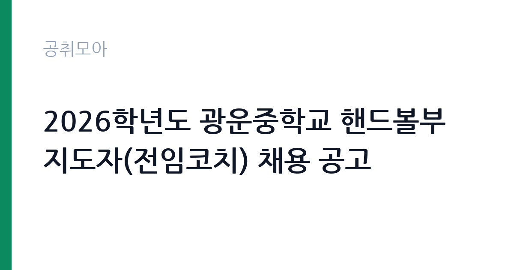

[교육청] 2026학년도 광운중학교 핸드볼부 지도자(전임코치) 채용 공고
서울특별시교육청 서울특별시북부교육지원청 광운중학교 · 서울 · 마감 2026-10-01 (D-4) · 출처 나라일터

한눈에 보는 모집 조건
| 기관 | 서울특별시교육청 서울특별시북부교육지원청 광운중학교 |
|---|---|
| 공고명 | 2026학년도 광운중학교 핸드볼부 지도자(전임코치) 채용 공고 |
| 고용형태 | 정규직 |
| 근무지 | 서울 |
| 게시일 | 2026-09-28 |
| 마감일 | 2026-10-01 (D-4) |
지원자격, 이렇게 읽으세요
- 핸드볼부 지도자(전임코치) 1명
- 접수 ~2026-10-01 마감
- 세부 조건은 원문 공고문 확인
지원 자격은 두 가지 중 하나를 충족하면 됩니다. 첫째는 국민체육진흥법 시행령에 따른 체육지도자 자격증 소지자이며, 둘째는 중등학교와 대학, 실업팀 선수 경력자입니다. 학력과 연령 제한은 원문에 별도로 명시되어 있지 않습니다. 해외여행에 결격사유가 없어야 하며, 학교 근무이므로 성범죄 경력 조회 등 아동과 청소년 관련 기관 취업 제한 대상에 해당하지 않는지 미리 확인하셔야 합니다. 자격증 사본이나 선수 경력 증빙 서류는 접수 전에 준비해 두는 것이 좋습니다.
이 공고의 포인트
이 공고의 가장 큰 특징은 전임코치라는 점입니다. 전임코치는 교육청 예산에서 보수를 받는 자리로 학교와 개별 계약하는 일반코치보다 보수 체계가 안정적입니다. 접수 기간이 사흘뿐이라 서류를 미처 준비하지 못해 지원하지 못하는 경우가 생기므로, 준비된 지원자에게는 경쟁 부담이 낮은 공고입니다. 핸드볼은 전임코치 체제가 유지되는 비인기 종목이라 지도 경력을 쌓기에 좋은 환경입니다. 서울 노원구 근무로 수도권 거주자의 출퇴근 접근성도 좋습니다.
전형은 어떻게 진행되나
접수는 이메일(kwms1934@sen.go.kr) 또는 광운중학교 행정실 방문 접수(평일 오전 9시부터 오후 4시까지)로 진행됩니다. 마감은 10월 1일 오전 10시이며 오후 마감이 아니라는 점을 주의하셔야 합니다. 접수 기간 외에 제출된 서류는 접수로 인정되지 않습니다. 이메일 접수자는 발송 후 행정실(02-6958-0006)에 접수 여부를 확인하는 것이 안전합니다. 이후 전형은 서류 심사와 면접 순으로 진행되는 것이 일반적이므로 원문 공고문의 전형 일정을 확인하십시오.
원문에서 확인한 전형 방식
○ 모집분야 : 핸드볼부 지도자 1명 ○ 선발직급 : 전임코치 ○ 자격요건 : 「국민체육진흥법 시행령」에 따른 체육지도자 자격증 소지자 또는 중등학교·대학·실업팀 선수 경력자 중 1개 이상 해당자(해외여행에 결격사유가 없는 자) ○ 계약기간 : 2026. 10. 12. ~ 2027. 1. 9. ○ 접수기간 : 2026. 9. 28.(월)？~ 2026. 10. 1.(목) 10:00까지 ※ 접수기간 외 제출된 서류는 접수로 인정하지 않음. ○ 응시방법 : 이메일 접수(kwms1934@sen.go.kr) 또는 광운중학교 행정실 직접 접수(평일 09:00~16:00) ○ 문의처 : 02-6958-0006 자세한 내용은 반드시 첨부된 채용 공고문을 확인하시기 바랍니다.
이런 분께 추천해요
- 체육지도자 자격증을 보유하고 학교 현장에서 지도 경험을 쌓고 싶은 분께 적합합니다.
- 선수 생활을 마치고 학교 운동부에서 지도자 경력을 시작하려는 분께 잘 맞습니다.
- 2026년 10월부터 2027년 1월까지 겨울 시즌 집중 지도를 맡을 수 있는 분께 좋습니다.
지원 전 체크리스트
- 접수 마감이 10월 1일 오전 10시라는 점을 확인하고 미리 접수하셨습니까.
- 체육지도자 자격증 사본 또는 선수 경력 증빙 서류를 준비하셨습니까.
- 이메일 접수 후 행정실(02-6958-0006)에 접수 확인 전화를 하셨습니까.
- 계약 기간이 2027년 1월 9일에 끝나는 단기 계약임을 확인하셨습니까.
모집 일정과 제출 타이밍
9월 28일 접수가 시작되어 10월 1일 오전 10시에 마감됩니다. 계약은 10월 12일에 시작되므로 합격자 발표와 임용 절차가 일주일 안에 진행됩니다. 일정이 촉박하므로 가급적 9월 29일에서 30일 사이에 접수하는 것을 권장합니다. 마감 당일 오전 접수는 접수 오류나 서류 누락에 대응할 시간이 없으므로 피하셔야 합니다. 방문 접수는 평일 오후 4시까지만 가능하므로 시간 계획에 유의하십시오.
직무 이해하기: 교육청
학교운동부 전임코치는 학생 선수들의 훈련 계획을 세우고 기술을 지도하며 경기에 인솔하는 역할을 맡습니다. 핸드볼은 속공과 수비가 빠르게 전환되는 종목이라 체력 훈련과 포지션별 개인 기술 지도, 팀 전술 훈련이 병행됩니다. 학생 선수 대상이므로 훈련 성과뿐 아니라 부상 예방과 컨디션 관리, 학습권 보장에 대한 이해가 필요합니다. 학부모 상담과 학교 행정 협조, 대회 출전 관련 업무도 지도자의 몫이므로 소통 능력이 중요합니다.
자기소개서 작성 팁
자기소개서에는 선수 경력과 지도 철학을 연결해서 작성하십시오. 어떤 포지션을 맡았고 어떤 훈련 방식으로 성장했는지 구체적인 경험을 제시하면 설득력이 높아집니다. 학생 선수 지도는 성인팀 지도와 다르므로 안전 관리와 인성 지도에 대한 관점을 한 문단 포함하는 것이 좋습니다. 단기 계약이라는 점을 고려해 3개월 안에 팀에 남길 수 있는 성과를 구체적으로 제시하면 좋은 평가를 받을 수 있습니다.
면접 준비 포인트
면접에서는 실제 훈련 프로그램 구성안을 묻는 경우가 많습니다. 주간 훈련 계획과 겨울철 체력 관리 방안을 미리 정리해 가십시오. 학생 선수 부상 대응 절차와 학부모 소통 방안도 단골 질문이므로 답변을 준비해야 합니다. 핸드볼 종목에 대한 이해도와 어린 선수를 장기적으로 육성하겠다는 관점을 보여주는 것이 중요합니다. 전임코치로서 학교와 교육청의 운영 지침을 존중하겠다는 태도도 좋은 인상을 줍니다.
급여·근무조건 읽는 법
원문에 보수 금액이 명시되어 있지 않으므로 첨부된 채용 공고문의 보수 항목에서 확인하셔야 합니다. 학교운동부 전임코치는 교육청 예산에서 보수를 받는 형태로 서울시교육청의 교육공무직원 보수 기준 등에 따라 지급되는 것이 일반적입니다. 정확한 월 보수와 수당 구성, 4대 보험 적용 여부는 광운중학교 행정실(02-6958-0006)로 문의하시면 안내받을 수 있습니다. 보수 조건은 지원 전에 반드시 원문에서 확인하십시오.
자주 묻는 질문
- 선수 경력만 있고 자격증이 없으면 지원할 수 있습니까?
가능합니다. 중등학교와 대학, 실업팀 선수 경력자도 지원 자격에 포함됩니다. 다만 경력을 증빙할 수 있는 서류를 갖춰야 하므로 미리 준비하십시오. - 계약 기간이 끝나면 어떻게 됩니까?
2027년 1월 9일 계약 만료와 함께 근로관계가 종료됩니다. 연장 여부는 학교 사정에 따르므로 원문 공고문과 행정실 안내를 확인하십시오. - 이메일로 접수하면 끝입니까?
발송 후 접수 확인을 권장합니다. 접수 기간 외 제출은 인정되지 않으므로 행정실(02-6958-0006)에 접수 여부를 확인하는 것이 안전합니다.
함께 보면 좋은 공고
[교육청] 2026 동부 교육법률지원단(학교폭력 분야) 변호사 채용 — 마감 2026-09-28[교육청] 동아고등학교 교육공무직(시설관리실무사) 채용 공고 (기간제근로자) — 마감 2026-10-06[교육청] 서울신구초등학교 2026년 지방공무원 대체직원(시설관리) 채용 공고 — 마감 2026-09-29출처: 나라일터 공개정보를 바탕으로 공취모아가 정리한 안내글입니다. 모집 조건·일정은 변경될 수 있으니 지원 전 반드시 원문 공고문을 확인하세요. 본 글은 정보 제공용이며 합격을 보장하지 않습니다.